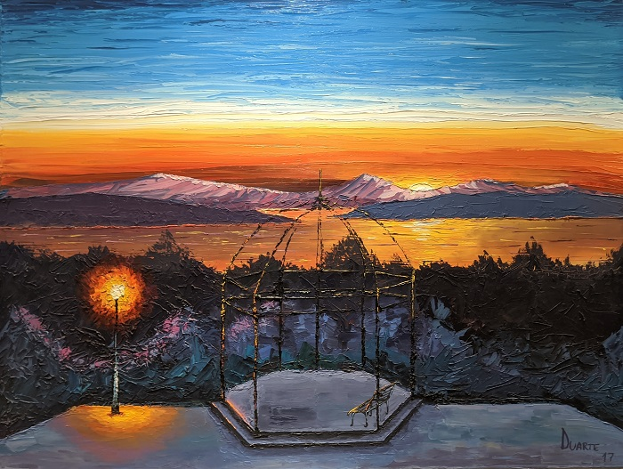

Sobre mí
Me considero una persona entusiasta, creativa y proactiva. Con mi mirada busco poder ayudar a generar el cambio necesaario para ir cambiando en este mundo, que cada vez es más innovador. Lo más importante para mí es crecer y poder desarrollarme tanto personal como profesionalmente. Considero que la creatividad y la sabiduría son dos pilares escenciales para el crecimiento.
Adobe Photoshop

Adobe photoshop fue mi herramienta principal para adentrarme en el diseño. Años atrás, en mis tiempos libres aprendí a usar Photoshop en profundidad. Este programa fue la primera herramienta digital que logré dominar. Todo comenzó queriendo hacer pequeños retoques en algunas fotos de mis amigos o familia; borrando algún objeto o eliminando los fondos de las fotos que sacaba. Luego, poco a poco fui descubriendo del mundo que se escondía dentro del photoshop y decidí profundizar en el. Ahí fue cuando empecé con el arte digital, usando Photoshop como mi herramienta principal. Todo esto me abrió grandes puertas para conocer este mundo digital, y la importancia de las redes en ello. A partir de ahí, descubrí nuevos rincones y empecé a entender un poco más sobre como todo funcionaba en el mundo artístico - digital.
+Trabajos
Óleo
La pintura conjuga elementos de la representación plástica como las formas, los colores, las texturas, la armonía, el equilibrio, la perspectiva, la luz y el movimiento. De esta manera, busca transmitir al espectador una experiencia estética. Óleo es una pintura espesa que se obtiene al mezclar pigmentos en polvo con un aglutinante a base de aceite. A diferencia de otras pinturas como el acrílico o la acuarela, el óleo no se puede diluir en agua, porque al tener una base oleosa hace que sus partículas, al entrar en contacto ella, generen una mezcla heterogénea. Sería lo mismo que echar una cucharada de agua a una taza de aceite. Esta técnica es utilizada por los artistas desde la Edad Media, donde los pintores combinaban la pintura al óleo con las técnicas del temple y el fresco.
+Trabajos